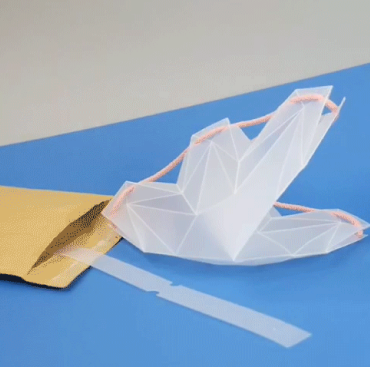

flat pack postage
The pots will be shipped flat packed so they can be slipped through your letter box

easy assembly
POTR Pots are super easy (and super satisfying) to assemble using the quick draw cotton cord

Self-watering
Simply add water into the pot — if your plant is thirsty it will automatically start drinking the water through the cotton cord. Magic!